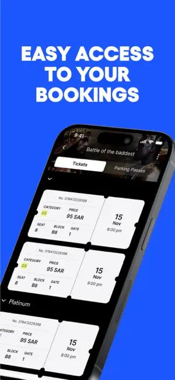
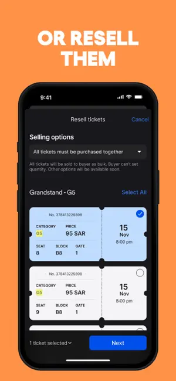

Webook 深度对比评测：沙特活动票务+旅行预订的超级应用到底值不值得装
从订阅特权、抢票机制、活动+航班组合场景三个维度，把 Webook 放进同类坐标系里拆解，帮你判断要不要为它买单。
我先交个底：我用过不止一款活动票务平台，从 Eventbrite、Ticketmaster 到本地的沙特活动平台，Webook 是少数让我觉得「它不是另一个卖票的」——它的官网上直接把活动票务和旅行预订放在了同一个入口，把订活动和订机票这两件原本要来回切 App 的事揉进了同一个 Bookings 里。这个类目的格局说大不大、说小也不小：大厂方案要么只做票务（Ticketmaster 系）要么只做旅行（Skyscanner 系），系统自带那几个沙特本地工具要么功能太浅要么体验粗糙。Webook 夹在中间，走了一条没人完全复刻的路线——所以值得单独写它。

差异化一：订阅特权把抢票这件事做透了
同类工具的订阅大多停留在「免手续费」「有专属客服」这个层面，Webook 直接把订阅和抢票能力绑定了。五档计划的详细对比可以去Webook文档查，从免费的 Fun 到每年一万 SAR 的 Black VIP，核心差异不是权益数量而是抢票的时间窗口——利雅得季计划提前 1 小时，Gold 提前 12 小时，Diamond 和 Black 直接 48 小时。
这看起来像个营销手段，但在热门场次里差距是天差地别。我身边有个朋友追沙特阿拉伯超级杯的票，用免费档蹲了三天没抢到一张，Gold 档开抢前 12 分钟就买到了 Premium 票——同一活动，同一价格，差的那 12 小时就是买得到和买不到的区别。
另外两个细节也值得说：Skip Queue（跳过排队）和票务升级。Skip Queue 让你在热门场次不用等队列；票务升级在有库存时自动帮你升到更好的座位。免费档完全没有这功能，Gold 开始有，Diamond 以上升级是始终可用的。转售溢价也分层——免费档只能原价转卖，Gold 最高 2 倍，Black 可以到 10 倍。
差异化二：活动 + 航班的组合场景是真的好用
这是 Webook 最不像同类的地方。一般你订了利雅得的演唱会门票，如果人在吉达，接下来就得切去机票 App 查航班、切去酒店 App 订房间，最后三个地方各存一份订单。Webook 把前两件事打通了：订活动门票之后，直接在同一个应用里搜往返机票，支付完成后两张票都进同一个 Bookings 页面。
不是说它的航班功能比 Skyscanner 强——国际长途的航司覆盖确实有限，价格也未必有优势。但同场景下少切几个 App 本身就是价值。尤其是在利雅得季节这种活动密集期，周末可能同时有三四个活动 + 往返行程要安排，统一入口的好处就出来了。
航班预订的另一个实际优势是支付方式和活动门票完全一致——Mada 卡、Visa/Mastercard、Apple Pay，不用再注册新的支付渠道。电子机票也是即时生成，直接发到注册邮箱，这点和专业机票平台没差别。

取舍：为这些优势付出了什么
先说最直接的——上手门槛偏高。如果你要装 Webook，直接从下载拿安装包就行，但注册环节只有邮箱+密码这一条路，手机号是可选的辅助验证，而且完全没有第三方快捷登录（Google、Facebook）、指纹、面容 ID。每次登录都要敲邮箱地址和密码，这点和同类工具比起来太原始了。注册流程里密码强度还卡得很死——至少 8 位、含大小写和数字，这对安全是好事但对懒用户不友好。
然后是平台限制。Webook 的核心市场是沙特阿拉伯，航班覆盖以沙特国内和周边（埃及、土耳其、阿联酋）为主，国际长途基本只能当参考渠道。如果你主要在欧美或东南亚活动，它的航班功能基本没用。活动门票也以沙特本地活动为主，国际演出和赛事覆盖有限。
还有一些看起来不是大问题但实际影响体验的细节：连续输错密码五次就会触发账号锁定，30 分钟自动解锁但期间什么操作都做不了；注册时如果短时间内多次提交会触发风控，要等半小时才能重试；提现手续费是按次固定收（8 SAR 免费档，Diamond 以上 0），不是按比例，小额提现会显得贵。
选购结论：什么样的人选它
如果你符合以下任一条件，Webook 值得装：
- 住在沙特阿拉伯或经常去，一年至少 3~5 场活动——Gold 档 200 SAR/月的性价比在抢票上能很快赚回来
- 平时订活动票之后经常需要订往返机票——组合场景的便捷性是同类工具没有的
- 追热门场次，不想蹲三天抢不到一张票——至少 Gold 档的 12 小时提前量是刚需
- 有转售需求——Gold 以上才允许溢价，专业票代直接 Black
反过来，如果你只是偶尔去一次免费活动、主要在沙特以外的地方活动、或者对「每次都要敲邮箱密码」这件事零容忍——那就别折腾了，同类里有更轻量的选择。
最后说个值得提的点：Webook 在安全上其实做得挺重的——邮箱验证、手机号绑定（可选但强烈推荐）、风控机制（TruFan + AI 抢票检测）、违规即永久封禁。服务条款里明确写了禁止用机器人抢票和倒卖加价，违反了账号直接永久封，里面的余额和未使用门票也取不回来。我见过有人因为用脚本抢票被封了，申诉也没用。所以如果你只是老老实实买票，它的安全机制是帮你挡黄牛的；但如果你有别的想法，那趁早打住。
总结一下：Webook 不是完美的，它在非沙特场景几乎无用、登录体验原始、订阅计划的价格梯度跳得很大。但在沙特活动 + 旅行组合这个定位上，它确实比任何同类工具都做得更聚焦、更深入。对于住在沙特的活跃活动爱好者来说，它就是比 Eventbrite 好用——原因很简单，Eventbrite 不帮你订机票。这套关于 Webook 的中文资料我同步维护在GitHub、Gitee和GitCode三个仓库，国内网络访问起来更顺畅。